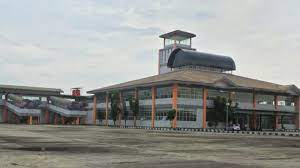
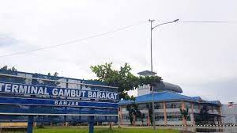
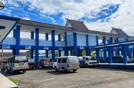
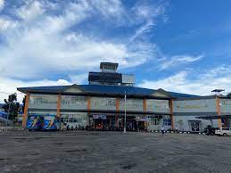

| Gambar | Nama | Deskripsi |
|---|---|---|
|  | Terminal KM 17 – Simpang Empat Banjarbaru PP | Terminal Gambut Barakat - Citra Graha A - Timbangan A - Carsurin - Masjid Al-Muhtadien - Air Nav - Bina Putra A - Masjid Hajjah Nuriyah - Minggu Raya - FK ULM - Simpang Empat Banjarbaru - UNLAM 1 - Kolam Renang Banjarbaru - Limousin - Arutmin - SDN Brimob - Bina Putra B - Masjid Al-Mukarramah - Golf - Polda Kalsel - Timbangan B - Citra Graha B -Terminal Gambut Barakat |
|  | Terminal KM 17 – Terminal Siring KM 0 Banjarmasin PP | Terminal Gambut Barakat - Gambut A - Indogrosir - PT Delta A - Pasar Ahad - Terminal Induk KM 6 - Dharma Praja - IAIN Antasari - Polresta - Golden Tulip - Pasar Sudimampir - Taman Siring Kilometer 0 - RSUD Ulin - RS Bhayangkara - Jasa Raharja - G’Sign - Terminal Induk KM 6 - PT Delta B - Universitas N.U - Gambut B - Terminal Gambut Barakat |
|  | Terminal KM 6 – Universitas Muhammadiyah Banjarmasin PP | Terminal Induk KM 6 - Universitas Sari Mulia A - Komplek Smanda A - Plaza Futsal A - Pom Simpang Empat - Banyu Anyar A - Dishub Capi A - UNISKA A - Kayu Tangi Permai A - Simpang Gusti A - RSUD Dr. H. Moch. Ansari Saleh A - Kebun Jeruk - Griya Permata A - Persada Raya 3 A - Masjid Jami Al-Mushallun - Olala A - Balai Latihan Masayarakat A - Universitas Muhammadiyah Banjarmasin - Balai Latihan Masayarakat B - Olala B - SDN Handil Bakti - Persada Raya 3 B - Griya Permata B - Terminal Handil Bakti - RSUD Dr. H. Moch. Ansari Saleh B - Simpang Gusti B - Kayu Tangi Permai B - UNISKA B - Dishub Capil B - Banyu Anyar B - Pasar Kesatrian - Plaza Futsal B - Komplek Smanda B - Universitas Sari Mulia B - Terminal Induk KM 6 |
|  | Terminal Gambut Barakat menuju Kantor Kecamatan Bati-Bati | Terminal Gambut Barakat - Kelurahan Landasan Ulin Selatan - LIK Liang Anggang - SDN Pandahan 2 - MTS Darul Amanah - Kantor Desa Liang Anggang - Indofood Permai - PT. Indofood - SMA Negeri 1 Bati-Bati - Kantor Desa Nusa Indah - PT. Japta Comfeed Indonesia - PT. Ciomas Adisatwa - Kantor Kecamatan Bati-Bati |